他独自航拍中国，走遍34省，发出的照片惊艳世界
中国之美
提及吕凤霄
或许你早已忘记这个名字
但估计还记得他的照片
2018年他发布的《鸟瞰神州》
这或许是
史上第一次
全部以俯视的视角
俯瞰中国神州大地
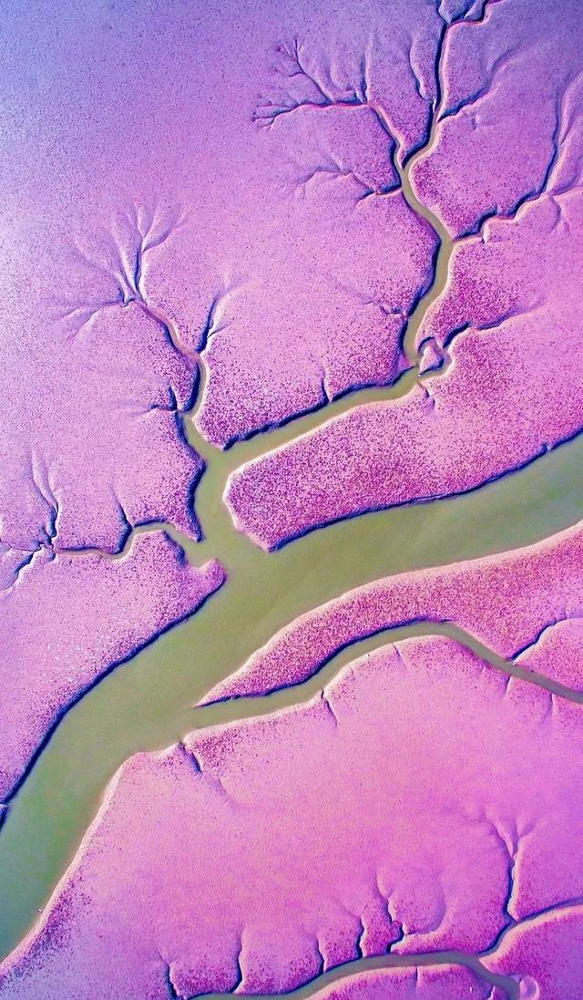
辽宁 盘锦红海滩
无人机拍摄的角度
常被称为「上帝视角」
它具有一般拍摄所无法达到的高度
更具有完全俯视向下的视角
它让我们从更高的角度
看到不同寻常的场景
黑龙江 扎龙湿地

为了拍摄中国
他三次走遍中国
即使相机被偷、飞机飞丢、炸机无数
他也从未停止探索中国
为了拍摄中国
他走南闯北、上山下海
因涨潮被困孤岛
甚至差点命丧贵州大山深处
这仍然不能阻止他
将全部积蓄都投入到行摄中国这项事业当中
.......

宁夏 腾格里沙漠
接下来
让我们跟随他的镜头，
从高空俯瞰中国，
感受她震撼人心的壮美。
自然风光
上帝画下的线条
自然地流淌出优美的蜿蜒
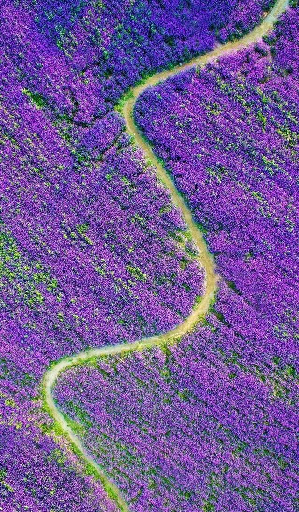
河北 张家口 花海
雪白的羊群
撒在碧绿的草原上
像花、像云、像圣洁的哈达

新疆 天山草原
隐藏在
戈壁深处的一串翡翠
鲜有人知
却美的让人心动
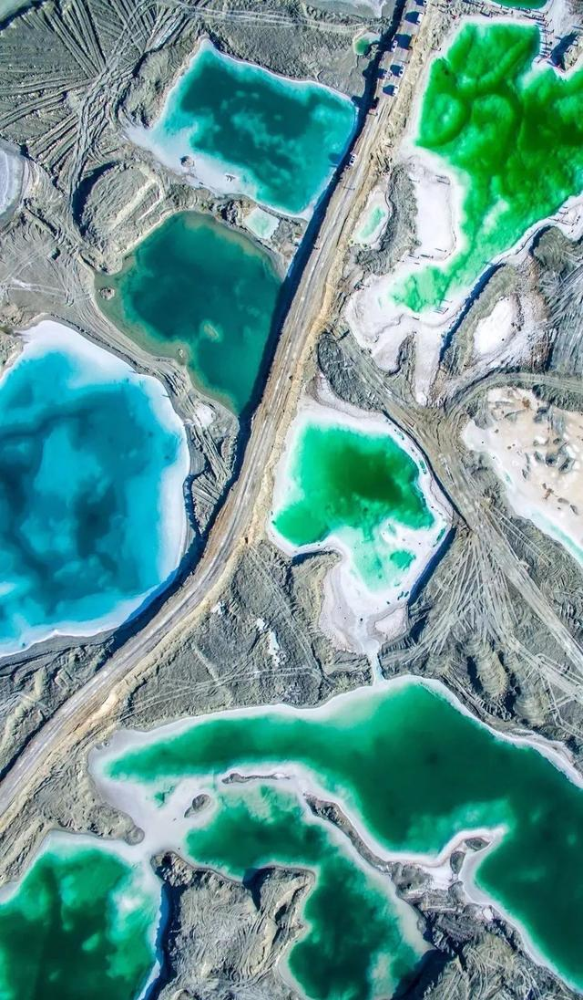
青海 柴达木 翡翠湖
今古长如白练飞
一条界破青山色
虚空落泉千仞直
雷奔入江不暂息
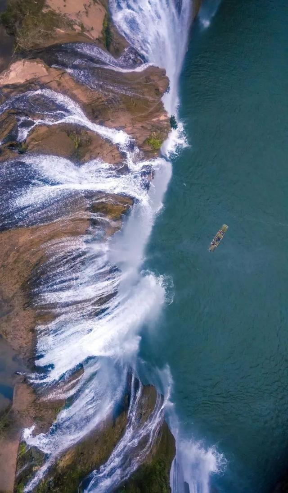
云南 九龙瀑布群
雕刻在你身上线条
巨龙一般
蜿蜒看不到边

甘肃 玛曲 阿万仓
地耸苍龙势抱云
天教青共众材分
孤标百尺雪中见
长啸一声风里闻
新疆 喀纳斯秋日雪景
曲径通幽处
禅房花木深

黑龙江 齐齐哈尔 大兴安岭
海水荡漾着
翻起一个个浪花
慈母般地抚摸着柔和的沙滩

海南 三亚 白沙滩
沟壑纵横风雨狂
青筋傲骨立苍莽

云南 元谋土林
说不上为什么
我对边上的那棵孤树有了感情
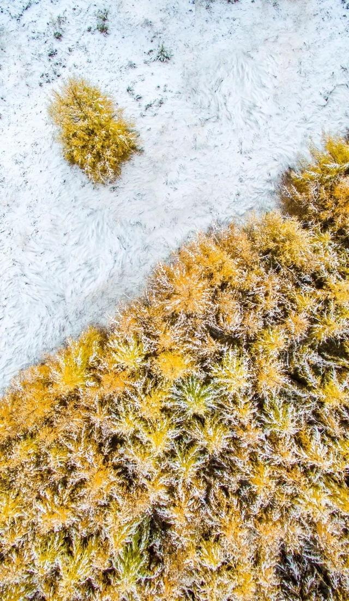
内蒙古 海拉尔 阿尔山
山川因你的潺潺
而不再寂寞湖泊因你的汇入
而更显宽阔
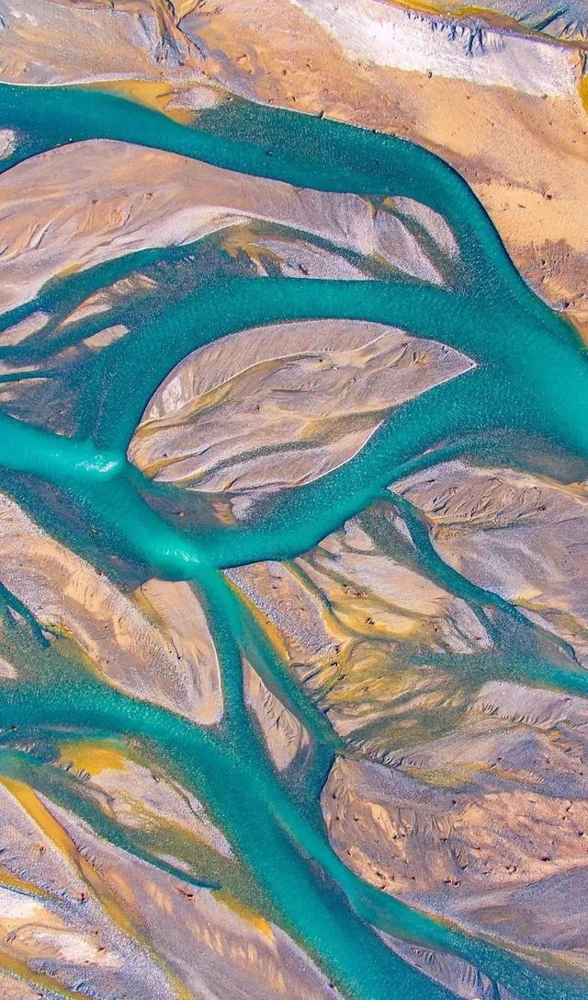
西藏 无名河
镶嵌在大山深处的
一滴眼泪
那是我对你不舍的依恋

内蒙古 莫尔道嘎
城市景观
无论时光如何流转
我却独自守候

广东 广州 天河立交
拔地而起
只为你的偶尔停留

浙江 杭州 钱江新城
线条柔美的拱顶
犹如盛开的喇叭花
实为孕育破茧而出
冲向世界的运动健儿的孵化器
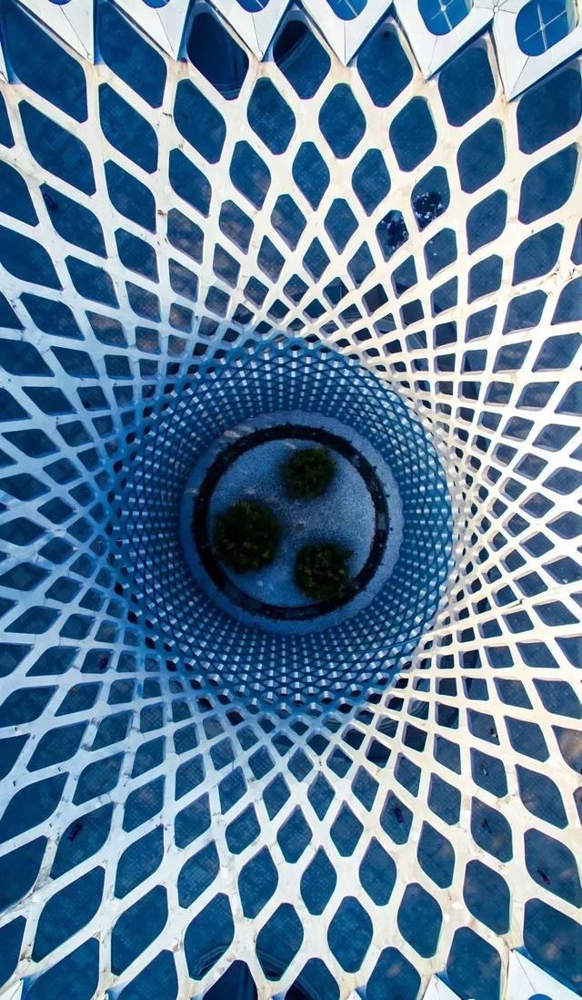
广东 深圳湾体育场
碧波万顷的静候
只为
一泻千里的疯狂
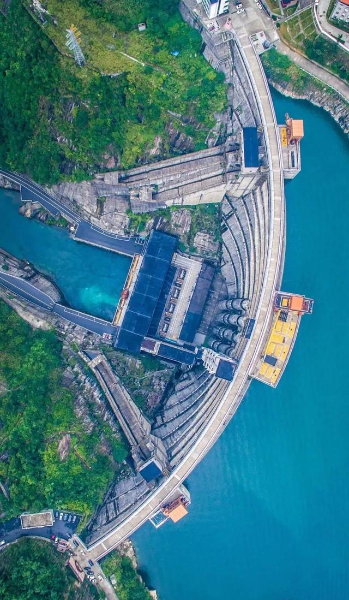
湖南 资兴 东江湖大坝
黄河
你是一位慈祥的母亲
经久不衰，流贯万里，不舍昼夜，携带着风色、涛声与豪笑
奔流了亿万斯年
你是中华文化的发源地
甘肃 兰州 元通大桥
生态人文
随风而舞的经幡
每飘动一下
就是我为你祈求一次

四川 瓦切塔林
上天涂抹的色块
色彩绚丽斑斓
衬以蓝天、白云和那变幻莫测的光束
构成了红土地壮观的景色

云南 东川红土地
格天彻地
以飨天下
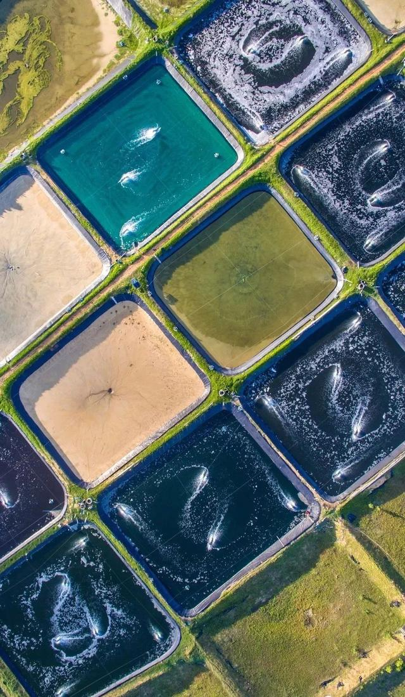
海南 渔业养殖场
漫山遍野的螺纹
南风吹过，涌起一股又一股金色的波浪
在阳光的照耀下闪过来一波又一波亮光

云南 罗平 油菜花
踏上千年的浮桥
聆听先哲的呢喃细语

江西 赣州 浮桥
山路
好像自己也在不懈地向高处奔驰
一直奔向那大地的最高处

河南 盘山路
浅浅的湖湾
互相依偎的小船
停靠在山脚的臂弯
睡在湖水的摇篮
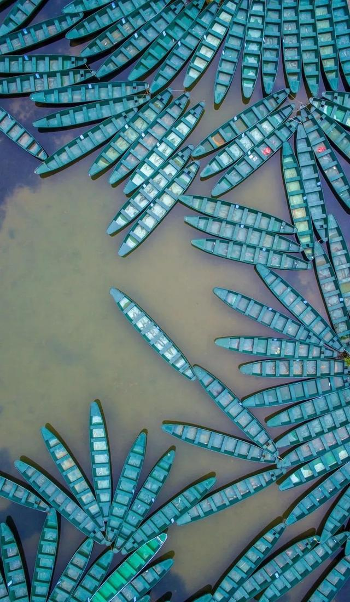
云南 普者黑
有光就有希望
科技凝聚力量

陕西 太阳能发电厂
田野金色的霞光
犹如一只神奇的巨手
徐徐拉开了柔软的雾帷
整个大地豁然开朗了

黑龙江 镜泊乡稻田
面对江水汹涌、波浪滔天
你却岿然不动
安静守护着这片土地

四川 乐山大佛
层层叠叠上远山
蜿蜒逶迤绕云间

广西 龙脊梯田
梯田叠翠彩云间
摆尾虬龙绕碧山
水转千旋流万陌
天阶妙曲九连环

云南 元阳 哈尼梯田
正月东风初解冻
渔人撒网波纹动

湖南 小东江
完全俯视的航拍照
一夜爆火
引发数百家主流媒体称赞吕凤霄：
“中国航拍第一人”

火了之后
他应邀不断
上节目，做演讲，拍纪录片等……
一度忙得不可开交
然而这样的日子没过多久
他便心生厌倦
这并不是自己想要的生活
他最终还是背起行囊
北至冰雪大漠
南至热带群岛
又把中国拍了遍
这不
《鸟瞰神州》第二季
悄然而至
—————— 壮美东北 ——————
碾压的车辙
似人生曲线
虽蜿蜒曲折
但始终向前

吉林 查干湖
牵手漫步在冰雪之上
温暖的灯光
是家的方向
吉林 雾凇岛
洁白的双曲面
与冰雪之城
交相呼应
融入彼此
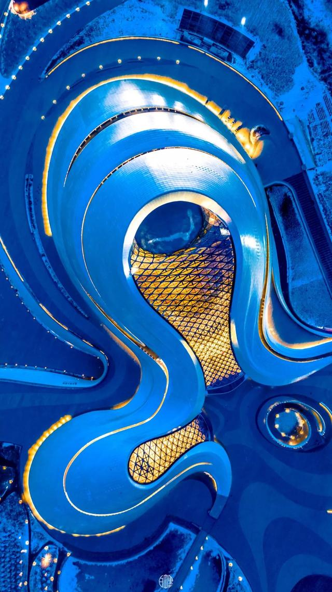
黑龙江哈尔滨 大剧院
前后相偕雪原间
雌雄上下不相逐
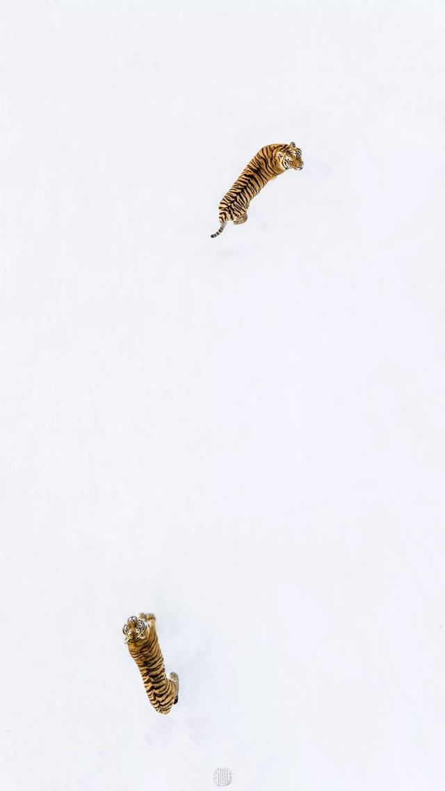
黑龙江牡丹江 东北虎
树状节理的沟壑
恰似大地的年轮
碱蓬草相伴左右

辽宁盘锦 红海滩
其实
他在过去的十年间
已四次行摄中国
拍摄了近100T神秘素材
航拍了50多万张“吕图”
涵盖了中国34个省份
目前仍在
“五刷”中国
 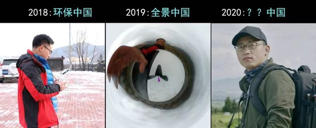
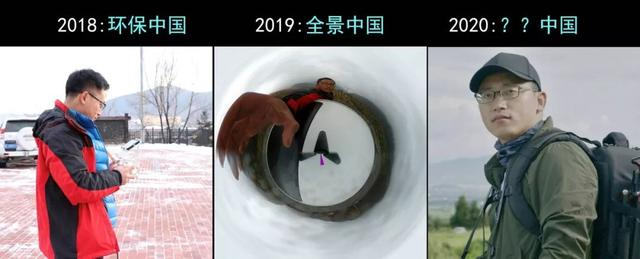
—————— 隽美华北 ——————
浴火重生的凤凰
即将展翅翱翔

北京 大兴机场
明长城的东起点
入海石城犹如龙首探入大海
弄涛舞浪
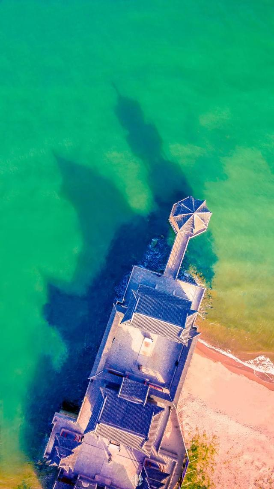
河北山海关 老龙头
黄色渲染的秋林里
独自漫步在生锈的铁轨上
望不到边
只听到鸟叫声
呼吸声
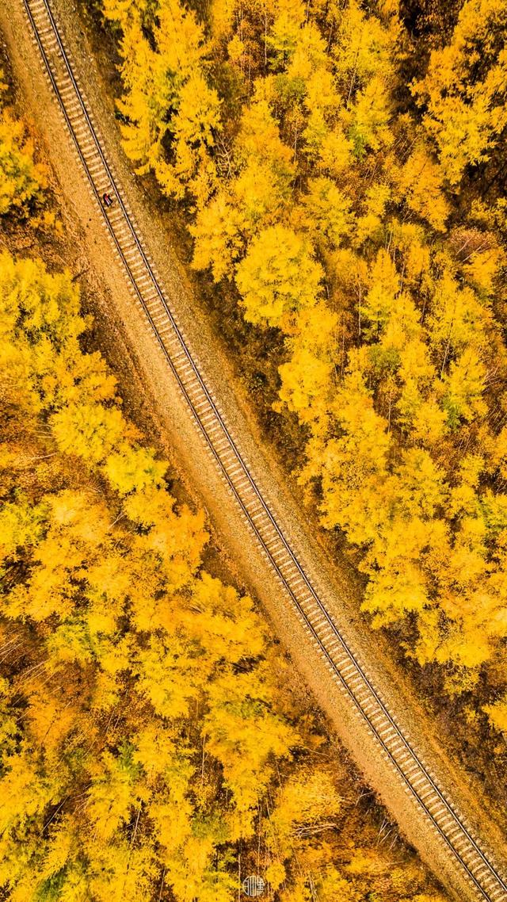
内蒙古呼伦贝尔 森林铁轨
夜晚的流光下
始建于北魏的临汾鼓楼和环绕它的装饰灯带
演绎出了穿越古今的方圆之美
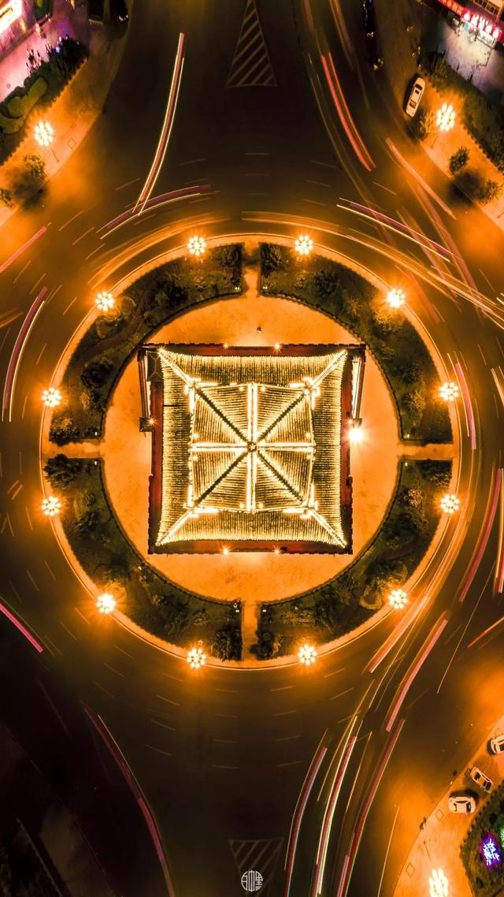
山西临汾 鼓楼
玲珑双塔探云高
虚实相间任逍遥

山西太原 双塔寺
一方湿地一片天
一滩芦苇一家园
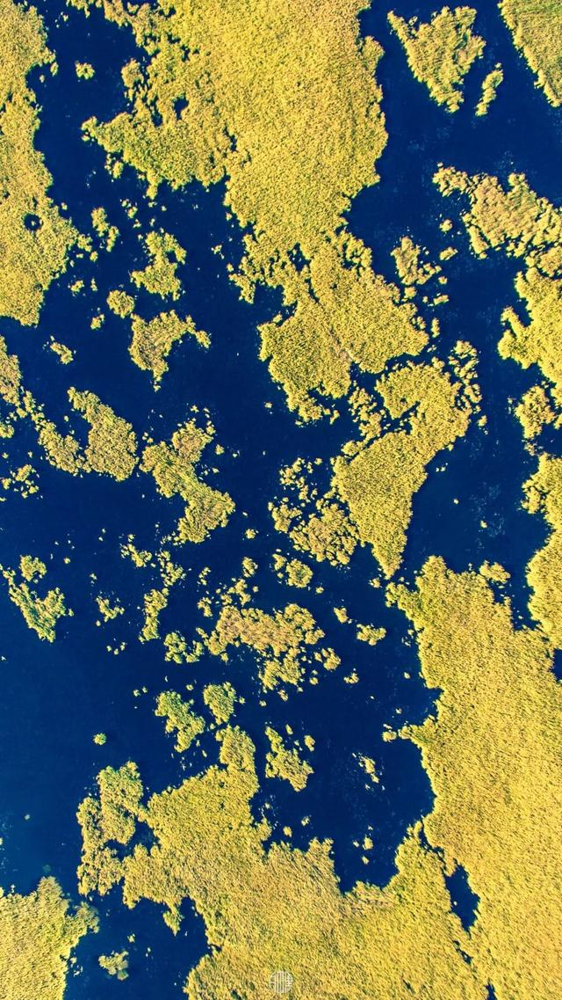
天津 湿地
由于长期外出追求“远方”
拍摄美照
为了有更多的时间去从记录大美河山
吕凤霄“辞职去吕行”
他辞去了园林设计总监职位
而在设计行业摸爬滚打了十多年的他
已小有成就
甚至获过国际设计金奖
按理说
他应该早九晚五
过着衣食无忧的生活
不甘平庸的他
还是做出了离职决定
—————— 斐美华东 ——————
点线之间
泛著淡淡的碧绿空中弥漫着淡淡的花香

浙江杭州 桃花坞茶田
云端俯瞰楼林立
浦江龙戏飘游熠
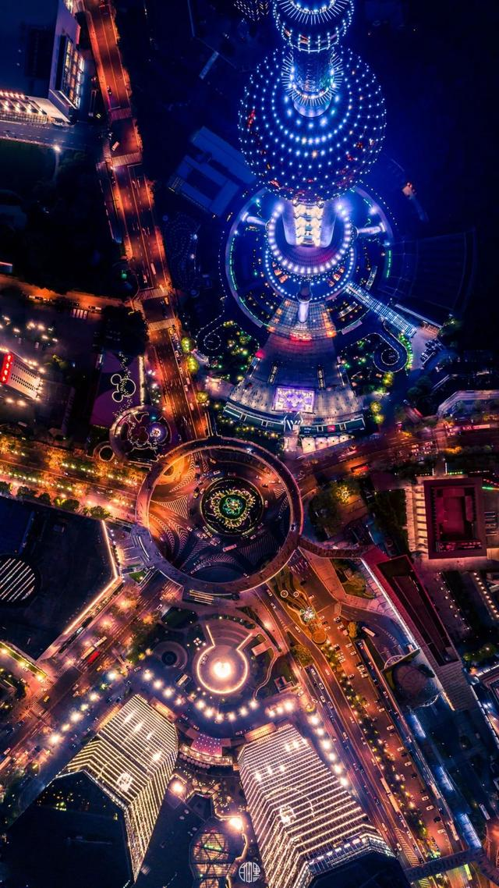
上海 东方明珠
一条蜿蜒盘旋的巨龙
延伸到四面八方
发射出灿烂夺目的光芒

山东济南 立交
风从身旁掠过
花从水上飘过
水从指尖划过
你在远方笑过

江苏兴化 水上油菜花
虽然他因航拍摄影被大众熟知
其实在他诸多身份中
（摄影师、设计师、高级工程师、旅行家、书法家、手工艺人）
他最讨厌别人称他为摄影师
更没想到的是
这个一度鄙视摄影的
著名跨界艺术家
为了拍摄大美中国
最后
竟然把摄影作为职业
既然职业了
就不能偷懒
这是他
每次外出“前凸后翘”的造型
前后两包加起来大概有80斤重

“前凸后翘”
—————— 恬美华南 ——————
扁舟泊银滩
绿丝迎朝阳

海南文昌 银沙滩
层层叠叠上远山
蜿蜒逶迤绕云间
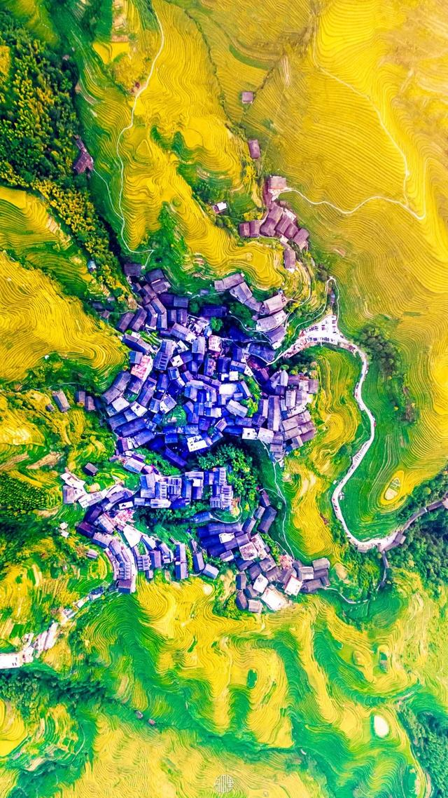
广西龙胜 龙脊梯田
因为有了不同的目的地
才会有千差万别的归宿
才会有千姿百态的人生

广东广州 中山一立交
站如松
坐如钟
走路一阵风
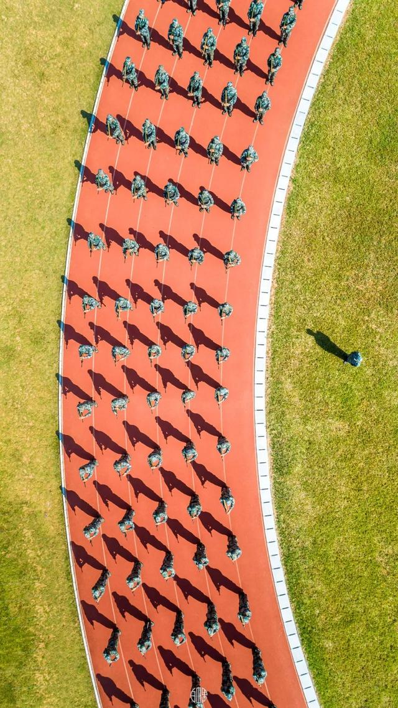
福建 某基地
不管翻山还是越岭
紧跟军旗
是一腔热血
是一种担当
更是男儿本色
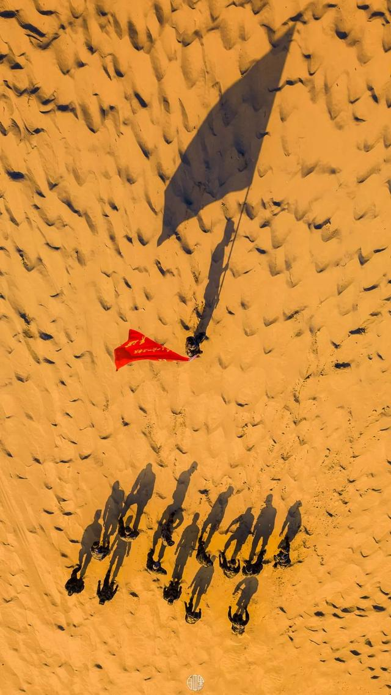
福建 某海岛尖兵连
走的多了
见得自然也就多了
甚至发现很多鲜为人知的秘密
美景背后
深山老林里可能隐藏了滥采乱伐
无敌海景旁的海岸线可能早已布满垃圾
遍体鳞伤的山川大地
拔地而起的水泥丛林
遮天蔽日的废气
一望无际的绿藻
这一切都让人触目惊心
他没有忍气吞声
更是用一年时间拍摄了
《神州之伤》
并公诸于世
他这么做纯粹是为了
让更多人全面了解我们的家园
让更多人携起手来保护大自然
日常生活中
他也不忘呵护大自然
他家几乎所有家具都是垃圾堆里捡来
经过他一手改造而成
他以身作则
倡导垃圾回收
垃圾分类

废旧木板改造的太师椅

废旧木板改造的茶几
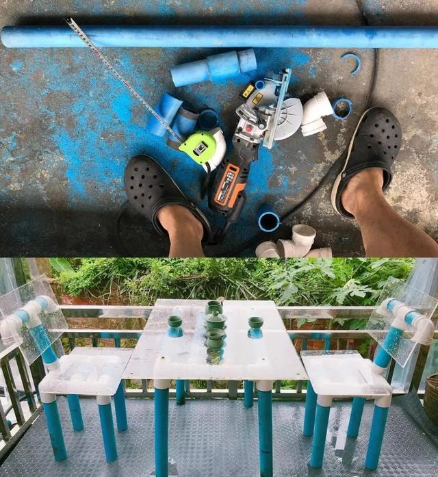
废旧水管改造成的桌椅
—————— 纯美华中 ——————
奇石纵横高入云
群芳吐翠齐参天
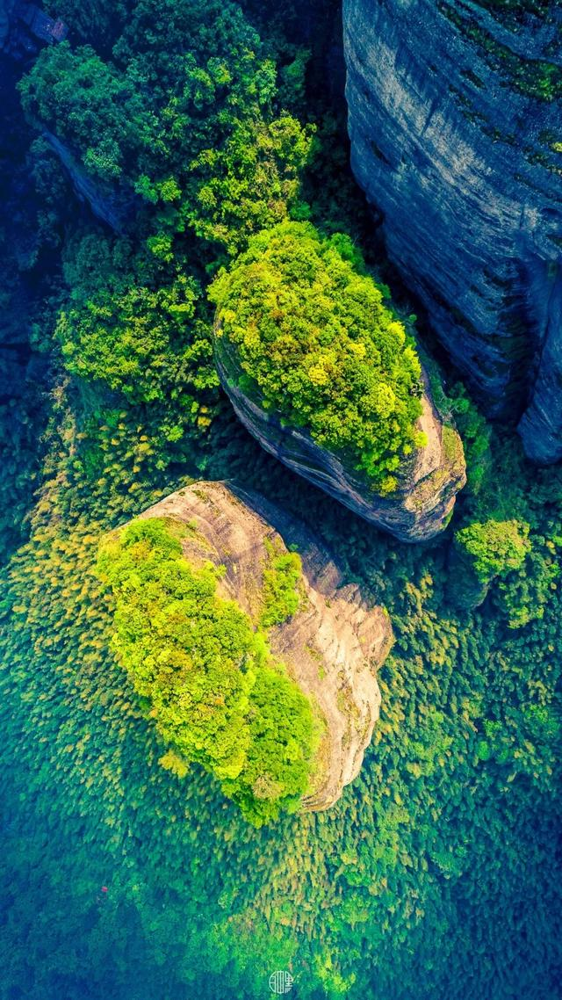
江西龙南 小武当
山无远近丹霞染
锦湖无流载歌舷
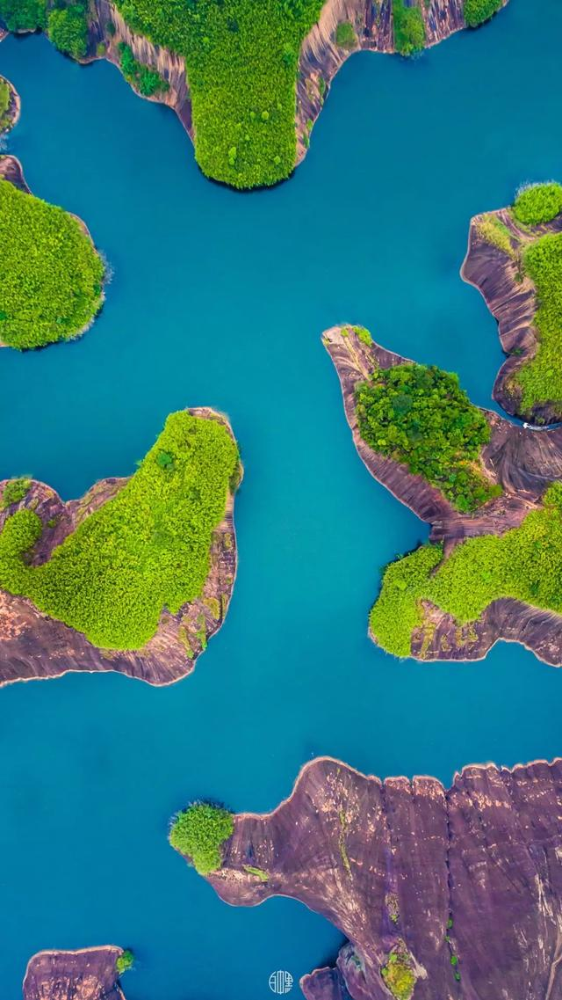
湖南郴州 高椅岭
层层叠叠上远山
蜿蜒逶迤绕云间

湖北
鸡犬远相闻
不见人家住
世守一方天
堪比神仙府

河南三门峡 地坑院
—————— 雄美西北 ——————
绿毯悄然换黄坪
牛蹄踏得夕阳碎
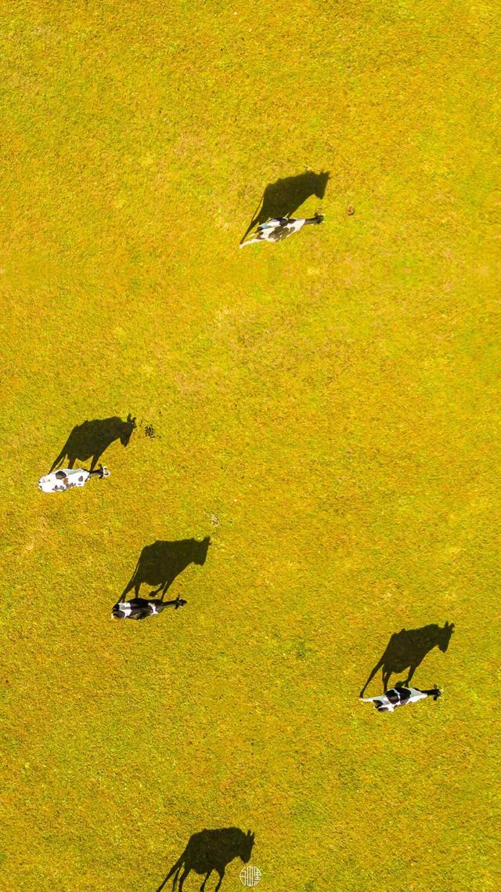
新疆 南山草原
万里洪流声怒号
天开一堑势雄豪
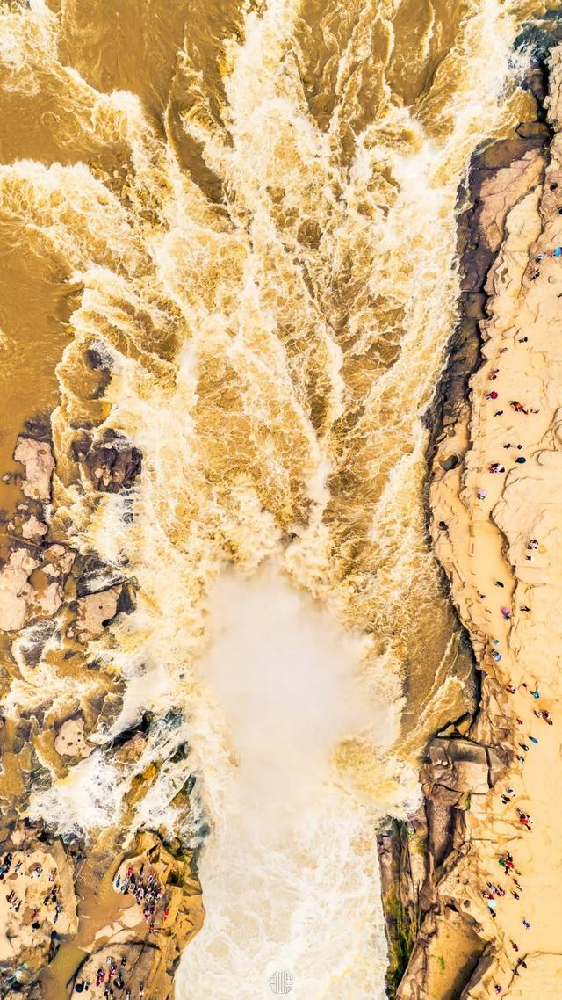
陕西延安 壶口瀑布
天空之城
抽象而深邃

青海 茶卡盐湖
光阴的长度不是日月移动的影子
是天人合一的归途
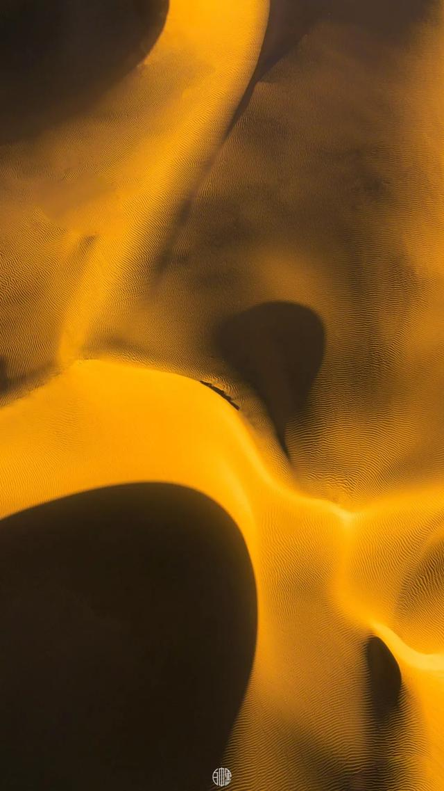
宁夏 沙坡头
冬日梯田
虽没夏日那般青葱
也没秋天那样金黄
却高冷而不失韵味

甘肃白银 梯田
—————— 绚美西南 ——————
寺庵鼎盛立观音
默祷年来有契心

重庆 华严寺
灼灼桃花六株
取一朵放在心上
足矣

云南普者黑 三生三世十里桃花
暮色初临华彩上
丽江方街风飞扬

云南丽江 四方街
灵魂和身体
必须有一个在路上
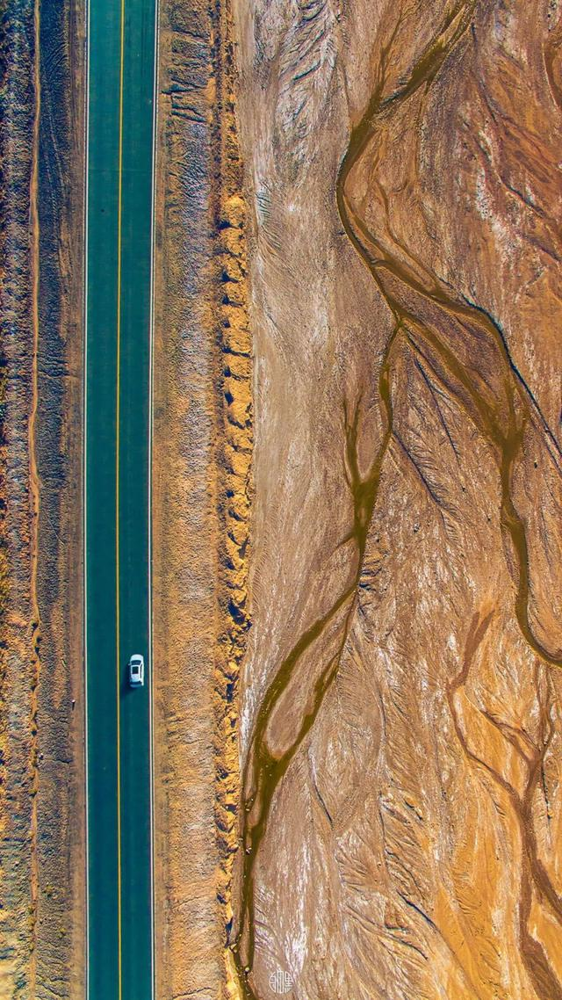
西藏公路
吊楼幽雅宾朋密
树木参天斗志昂
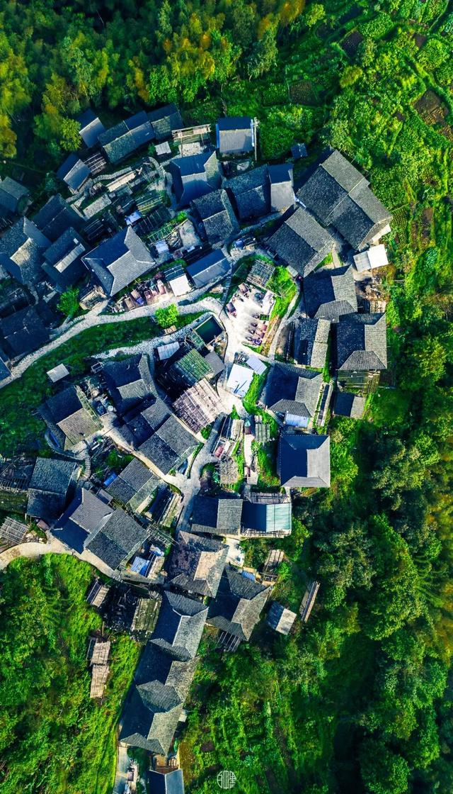
贵州从江 岜沙苗寨
茫茫云海绕群山佛光普照万物生
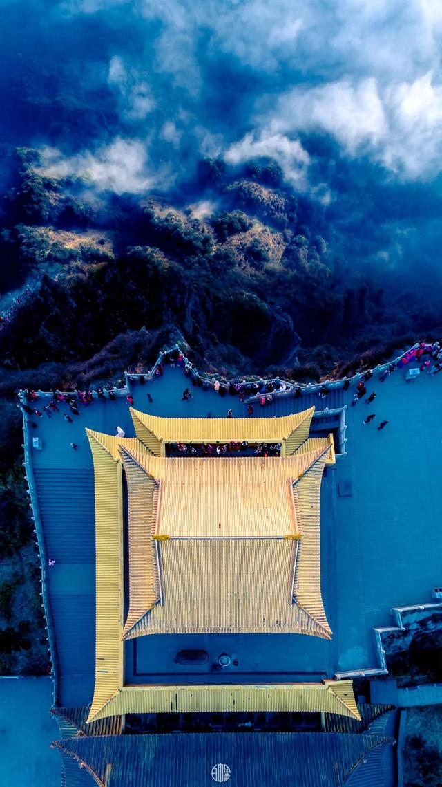
四川 峨眉山
一路下来
所经历的磨难与痛苦
只有吕凤霄自己能体会
▼ 他穿过的鞋

▼ 他走过的路
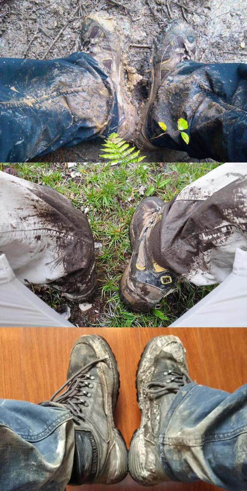
问他下一个目标在哪里？
他说
没有目标
但会一直在路上
只为
大美中国
……
— THE END —